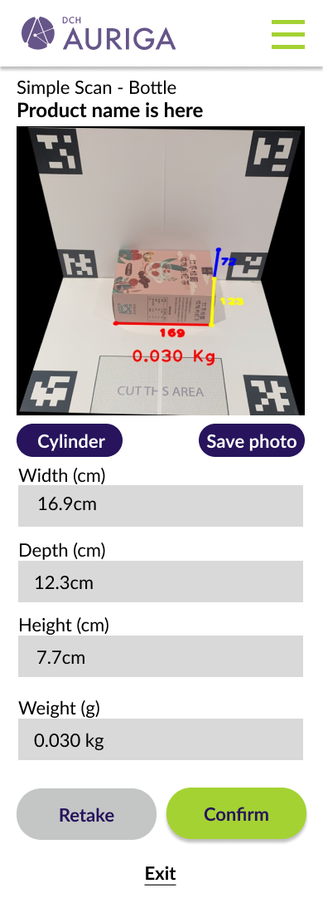
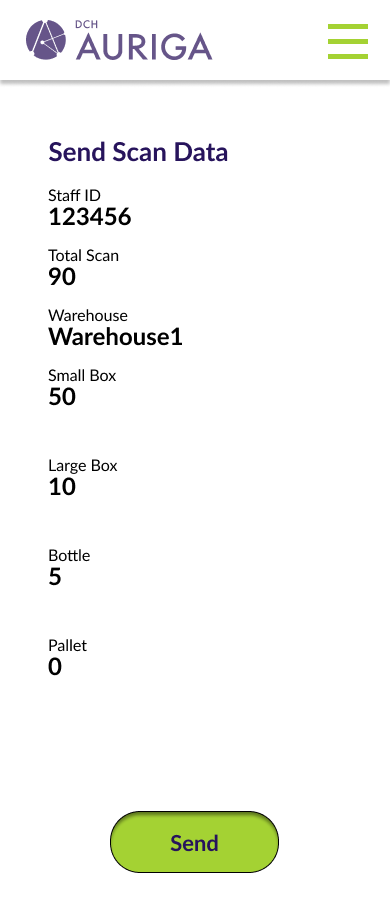
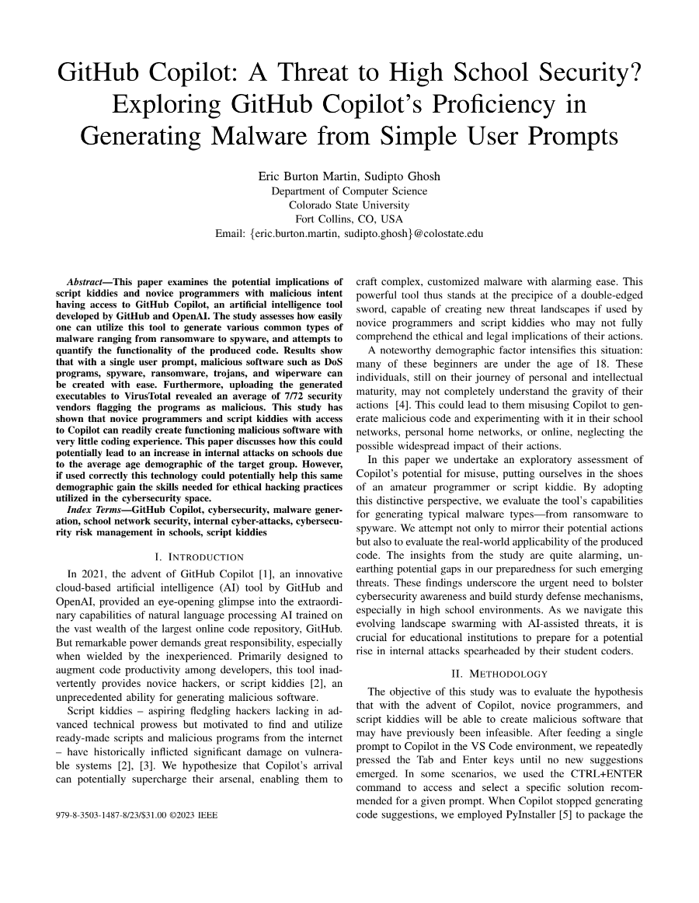

INTRODUCTION
I'm Sangam Man Buddhacharya
<Machine Learning WIZARD!!!.>
"After 2.5 years working as a Machine Learning Engineer in the tech industry, I am pursuing a dual master's degree in Computer Science and Artificial Intelligence at Oregon State University. I am currently working as a Research Assistant with Prof. Dr. Stephen Ramsey, focusing on implementing machine learning in precision medicine.
Expected graduation date: June 2025
4+
COMPUTER SCIENCE:YEARS OF EXPERIENCE
2+
AI/ML INDUSTRYYEARS OF EXPERIENCE
6+
PROJECTS IN:Production


Biography
Graduating from Colorado State University with a chemistry degree in 2013, I landed an opportunity to work at the forefront of analytical quantification methodologies for cannabis at Nordic Analytic. Being in the first state to legalize cannabis in the U.S., I was among the pioneering chemists in the cannabis testing industry, helping shape the methodologies we use today. I'm honored that my potency testing methodology was chosen by the state of Colorado as the industry standard. Later on, I joined Cannasafe in Los Angeles as the potency team lead. There, I built the potency department from the ground up and eventually managed a team of 8. During my tenure, we were ranked the 13th fastest-growing start-up in the U.S. by Inc., with our revenue skyrocketing by 12,143 percent. Throughout this journey, I recognized the vital role of the laboratory information management system (LIMS) in a scientific lab. Collaborating with software engineers responsible for LIMS at both Nordic Analytic and Cannasafe, I discovered my aptitude and enthusiasm for software development and product design. I started with coding courses on Codecademy, and when COVID hit, I contemplated a career shift to computer science. Embracing the challenge, I returned to Colorado State University for their revamped computer science program. In just 2.5 years, I earned my second bachelor's degree with magna cum laude honors and began pursuing my master's. Who knows? Maybe a master's will be the new bachelor's someday. I'm eager to find a role that either taps into my scientific background or lets me dive deep into computer science. I interned at Charles Schwab, getting a taste of a computer scientist's life, and I loved it. With the rise of generative AI, I'm excited to see where technology takes us. I pride myself on staying updated with the latest innovations and believe I can harness these advancements effectively.
Education
Dual Master in Computer Science and Artificial Intelligence (GPA: 3.96/4)
Reasearch Assistant with Prof. Dr. Stephen Ramsey
Oregon State University
Expected Graduation Date: June 2025Bachelor in Electronics and Communication Engineering (GPA 3.97/4)
Magna Cum Laude Distinction
Pulchowk Campus, Tribhuvan University
Dec 2021Experience - Timeline
A short summary of my work experience..
-

2023 - Present
Oregon State University,
Corvallis, ORI currently work as a Graduate Research Assistant at Ramsey Laboratory in the field of Machine Learning and Biology.
-

2023
Marbazzar, San Francisco, CA
Before coming to United States, I worked remotely as a Freelancer Machine Learning Engineer for two months. As a part of the team, I developed a pipeline to generate 3D Avatar of the human using a Single image of a person.
-

2023
geligulu (Freelancer), Remote Work
I worked as a Machine Learning Freelancer and developed an Automatic Dimension Measurement System. I designed the computer vision pipeline, trained deep learning models, and created a fully functioning Django web application. Additionally, I deployed the project on an AWS server using NGINX, managed the MySQL database, and automated the QR scanning process.
-

2023
Upwork (Freelancer), Remote Work
For Winter 2018, I was a machine learning intern at the NASA Goddard Space Flight Center, where I used machine learning to relate satellite measurements to applications of aerosol science. My project focused on using data from the MODIS Terra and Aqua satellites and GEOS-5 forecasting model to create a neural network model for the prediction of cloud effective radius.
-

2022 - 2023
Artlabs, New York, NY
As a Machine Learning Engineer (Remote), I designed LLM pipelines and web APIs for an AI-girlfriend chatbot using Langchain, ChatGPT, and FastAPI. I implemented NLP to create a web app that provides automatic art news summarization for tailored updates to art enthusiasts. For the TrakTrain client, I improved the music recommendation system, achieving a 63% increase in top-10 similarity accuracy, from 40%. Additionally, I developed an automatic UV wrapping tool for the RendezVerse client, reducing the manual UV texture mapping time for 3D designers by 20%.
-

2021 - 2022
Selcouth Technologies, Chitwan, Nepal
I worked as a Computer Vision Engineer and built a computer vision pipeline to recommend online clothing ads on Flipkart based on clothes from movies and short videos. I increased the approval rate from the ShareChat (MoJ) client from 51% to 83% within six months. Additionally, I designed a frame selection algorithm that decreased the false acceptance rate (FAR) by 4% and increased image retrieval accuracy by 7%. I also applied a human tracking system to solve the problem of identifying main characters for recommending unique clothing items.
-

2021
Cedargate (Deerwalk),
Lalitpur, NepalAs an Associate Data Engineer, I developed algorithms to transform data into actionable information. I interpreted and analyzed data using statistical techniques such as the Pearson correlation coefficient, K-Means Clustering, and PCA. Additionally, I standardized diverse data sources by mapping fields to a common schema and establishing a standardized vocabulary.
-

2021
NAAMII,
Lalitpur, NepalI worked as a Teaching Assistant at the 3rd Nepal Winter School in AI, where I guided participants in writing deep learning code and setting up frameworks such as TensorFlow, Keras, and OpenCV. I clarified fundamental concepts, including backpropagation, convolutional operations, pooling layers, and activation functions, for the novice group. Additionally, I introduced generative adversarial networks (GANs) to the advanced beginner group.
-

2020
LOCUS,
Lalitpur, NepalAs Hardware Coordinator, I organized hardware events, including RoboWarz, Dronacharya, and RoboPop, and led the national-level Locus 2020 competition with over 120 teams. I secured $8695.65 in sponsorships. I conducted a 15-day workshop on C, Python, and Arduino for 70+ freshmen, encouraging project development. Over 35 freshmen participated in LOCUS 2020 with their projects. I mentored three projects: Hand Gesture Recognition, Face Recognition for Door Security, and Medical Drone Service, with the latter winning the instrumentation title.
-

2016 - 2021
Pulchowk Campus,
Lalitpur, NepalAs a Research Assistant on a UGC Collaborative Research Grant under the supervision of Dr. Sanjeeb Prasad Panday, I conducted experiments to determine depth from a single image. I compared the advantages of monocular depth estimation against traditional methods such as LiDAR, Kinect, and stereo vision. Additionally, I explored the feasibility of generating 3D point clouds from drone images for surveillance in disaster-stricken areas. This research culminated in a published paper in a scientific journal.
Competencies
Technical Competencies
Here are the technical skills I have acquired throughout my computer science career. While I don't claim to be a master of all these skills, I am confident in my ability to hold a position that utilizes any of these competencies and to further develop my expertise as needed.
Languages
Python, C++, C, JavaScript, MySQL, HTML, CSS, JSON, YAML, MATLAB
Coding Methodologies
Test-Driven-Development, OWASP security knowledge, Agile, Clean Code, Useful Comments, Ability to adhere to ISO and other standards
Project Management
SCRUM, Maven, GitHub, Jupyter Notebooks, Kanban, Presentation Skills, Team Leadership/Management, Cross-Team Communication, Sense of Humor
Interests
Machine Learning
Data Science
Computer Vision
Data Visualization
Natural Language Processing
Generative AI
MLOps
Software Engineering
Software Development
Relevant Courses Taken
Algorithm (CS 514)
Machine Learning
Deep Learning
Natural Language Processing
Operating Systems
Artificial Intelligence
Project Management
Software Engineering
Database Management System
Big Ideas in AI
AI Ethics
Calculus I - III
Discrete Structures
Frameworks
NumPy, Scikit-Learn, TensorFlow, Keras, PyTorch, Matplotlib, OpenCV, Pandas, SciPy, Hugging Face, spaCy, NLTK, Langchain, Django, Flask, FastApi, Streamlit
Portfolio
My Projects
See my GitHub for actual details on the following projects. This is also most likely not up to date like most personal websites.
Automatic Dimension Measurement System
Graduating from Colorado State University with a chemistry degree in 2013, I landed an opportunity to work at the forefront of analytical quantification methodologies for cannabis at Nordic Analytic. Being in the first state to legalize cannabis in the U.S., I was among the pioneering chemists in the cannabis testing industry, helping shape the methodologies we use today. I'm honored that my potency testing methodology was chosen by the state of Colorado as the industry standard. Later on, I joined Cannasafe in Los Angeles as the potency team lead. There, I built the potency department from the ground up and eventually managed a team of 8. During my tenure, we were ranked the 13th fastest-growing start-up in the U.S. by Inc., with our revenue skyrocketing by 12,143 percent.
SKILLS:
- Machine Learning, Computer Vision, Deep Learning, MLOps
- Django, API Request, SQL, AWS Deployment
- GitHub, Project Managment, Team Work




Video to Online Shopping
Matched the clothes from MoJ videos, and movies to similar items in an online shop (Flipkart). Similar (category, color, pattern) product ads as video items were recommended from an online shop. Most people wants to buy the same product that they see in the movies and tik-tok. How do they search those product in e-Commerce site? Obviously, typing all the requirements in the search bar, Example: “red shirt with logos in the middle”, with this you end up with different product. Only the text search available in the e-Commerce lowers the purchase rate since most of the user don’t find what they actually searching for. But with the advancement of deep learning and computer vision automatic searching has been made easier. Video to Online Shopping automatically detects the central character in the video and automatically search for the product in the database. No any hassel to search, type, and open e-commerse site since the product will be available next to you in the video.
SKILLS:
- Machine Learning, Computer Vision, Deep Learning, MLOps
- Web Scrapping, Data Augmentation, Data Filtering
- Django, API Request, SQL, AWS Deployment
- GitHub, Project Managment, Team Work
Biography
Graduating from Colorado State University with a chemistry degree in 2013, I landed an opportunity to work at the forefront of analytical quantification methodologies for cannabis at Nordic Analytic. Being in the first state to legalize cannabis in the U.S., I was among the pioneering chemists in the cannabis testing industry, helping shape the methodologies we use today. I'm honored that my potency testing methodology was chosen by the state of Colorado as the industry standard. Later on, I joined Cannasafe in Los Angeles as the potency team lead. There, I built the potency department from the ground up and eventually managed a team of 8. During my tenure, we were ranked the 13th fastest-growing start-up in the U.S. by Inc., with our revenue skyrocketing by 12,143 percent.

References
References
Here are some of the amazing people who I have worked with in the past that I could reach out to for a reference if needed.
I really need to update this to add all my amazing computer science references! But that will be for another day.
For my future reference: Dr. Indrakshi Ray, Dr. Sudipto Ghosh, Dave Matthews, Elisa Cundiff, Dr. Joe Gersh, Dr. Amani Altarawneh, Kelly Poto, Victor Berggren, Tyson O'Leary, Audrey Dorin, Charles Shwabbies, Luke Fisher, Enzo Barrett, Federico Larrieu, Matt Young, Kassidy Barram, and many more amazing people

Dave Butterfield
Operations & Project Management@ CannaSafe Analytics
Dave was my direct report supervisor at CannaSafe Analytics while I was a quality control chemist. We worked together on a variety of projects in regards to visualization of data trends, client complaints, and other buisiness analyical information.

Ini Afia, MSc.
Chief Science Officer@ CannaSafe Analytics
Ini Afia was the chief laboratory director at CannaSafe and was one of the best bosses I have worked with. We worked together to develop the potency department at CannaSafe and also worked on various side projects to better the company and its services.

Donald Biedenkapp
Assistant Laboratory Director@ Pride Analytics
Donald Biedenkapp was a brilliant chemist of whom I had the honor of being a part of my team. We worked together on an abundant amount of projects in order to constantly improve the analytical accuracy and precision of the cannabinoid department at CannaSafe.

Jennifer Feaster
Chief Operations Officer@ CeresLabs
Jennifer Feaster was an amazing Director of Operations at CannaSafe and was always working to improve the company. We worked together on developing the in-house laboratory information management system to improve the overall efficiency of the lab as a whole.

Zheng Wang
Laboratory Supervisor@ River Supply CO
Zheng and I both oversaw different departments at CannaSafe and collaborated on various projects including method validation and SOP development. I always looked forward to working alongside him.

Neya Jourabchian
Laboratory Director@ CannaSafe
Neya and I both led departments at CannaSafe until she became the analytical laboratory manager. She then worked with me to develop new procedures and methodologies to improve the potency department. She was a pleasure to work with and always had a positive attitude.

Esa Oittinen
Head of Product Development@ Tikun Olam USA
Esa was a supurb analytical chemist who worked on my team at CannaSafe. He was always a great asset to the team and always had a positive attitude. Alongside that he was always looking for ways to improve the department and pitched great ideas regularly.

Alexandra Harris
Field Application Scientist@ IsoPlexis
Alexandra was a technician on my team at CannaSafe whom I had the pleasure to mentor. Alexandra was a constant learner who brought a ton of educational skills to the team. With her lead, we worked together to develop new and innovative training materials for the potency department.

Alec Mouradkhanyan
Laboratory Production Manager@ CannaSafe
Alec was an amazing member of my team at CannaSafe. He was the definition of a hard worker who always was looking for ways to save the department money, improve efficiency, and increase throughput. I am proud of the progress he has made since we have worked together.

Saro Kanaan
Medical Device Sales Representative@ DJO
Saro was a great analytical chemist who worked on my team at CannaSafe. He was a very fast learner and was always seeking critical feedback during meetings in order to better himself. He was one of the most enjoyable people to work with and always knew how to boost team moral.

Jacquelyn Lam
Environmental Scientist@ California Department of Health
Jacquelyn was one of the first members on my team at CannaSafe. She was an invaluable asset to the team and helped bring it from its early stages to its current state. Her propensity towards research was a huge benefit for the team.